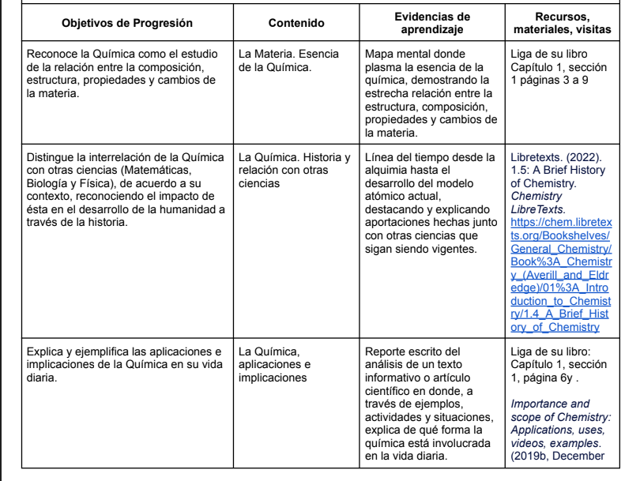
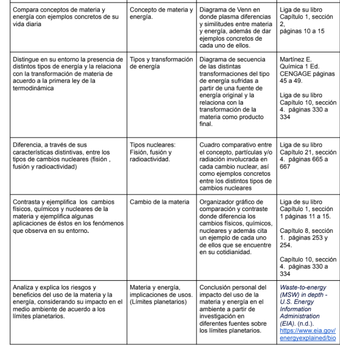
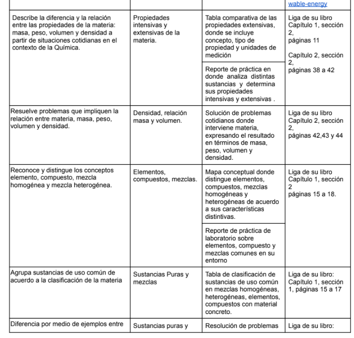
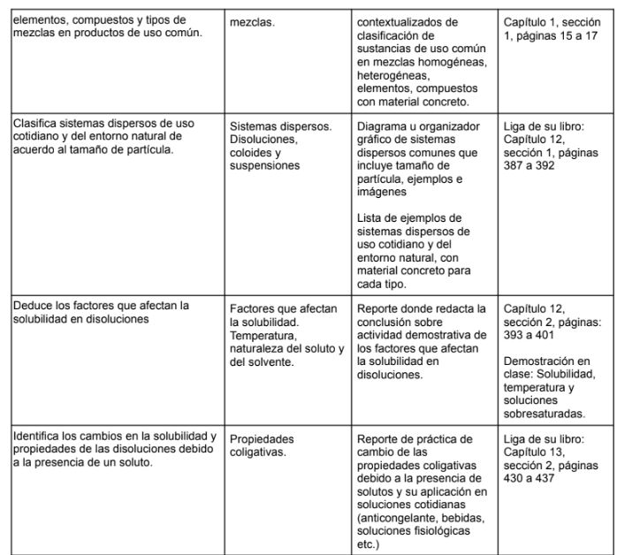

MATERIA: QUÍMICA
Inicio
Semestres
Atrás
Selecciona un tema de repaso
Chemistry: Definition
Matter and types of energy
Change in matter, its properties, Density, elements/compounds/mixtures, pure substances/mixtures
Prépositions de Lieu
Aprendizajes esperados
   